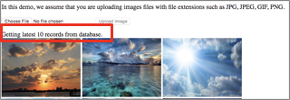

이번 레벨에서는 ElastiCache 를 통해 database를 캐싱 하도록 데모 코드를 수정하고 캐싱 동작을 확인합니다.
This caching behavior is not enable by default. You can edit config.php on all web servers with details regarding the cache server:
in config.php, there is a corresponding statement :
// Cache configuration
$enable_cache = true;
$cache_type = "memcached"; // memcached or redis
$cache_key = "images_html";
if ($enable_cache && ($cache_type == "memcached"))
{
$cache = open_memcache_connection();
}
else if ($enable_cache && ($cache_type == "redis"))
{
$cache = open_redis_connection();
}
Use AutoScaling to scale your server fleet in a dynamic fashion Refresh the demo application in your browser, you will see that the “Getting latest N records from database.” message is now gone, indicating that the information you are seeing is obtained from ElastiCache. When you upload a new image, you will see this message again, indicating the cache is being updated.

The following code is responsible of handling this cache logic:
// Get the most recent N images
if ($enable_cache)
{
// Attemp to get the cached records for the front page
$images_html = $cache->get($cache_key);
if (!$images_html)
{
// If there is no such cached record, get it from the database
$images = retrieve_recent_uploads($db, 10, $storage_option);
// Convert the records into HTML
$images_html = db_rows_2_html($images, $storage_option, $hd_folder, $s3_bucket, $s3_baseurl);
// Then put the HTML into cache
$cache->set($cache_key, $images_html);
}
}
else
{
// This statement get the last 10 records from the database
$images = retrieve_recent_uploads($db, 10, $storage_option);
$images_html = db_rows_2_html($images, $storage_option, $hd_folder, $s3_bucket, $s3_baseurl);
}
// Display the images
echo $images_html;
Also pay attention to this code when doing image uploads. We deleted the cache after the user uploads an images. This way, when the next request comes in, we will fetch the latest records from the database, and put them into the cache again.
if ($enable_cache)
{
// Delete the cached record, the user will query the database to get an updated version
if ($cache_type == "memcached")
{
$cache->delete($cache_key);
}
else if ($cache_type == "redis")
{
$cache->del($cache_key);
}
}